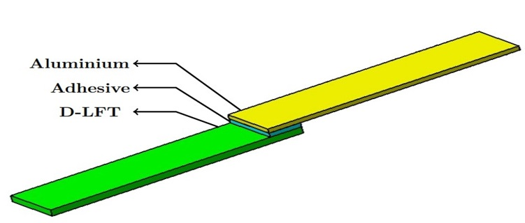
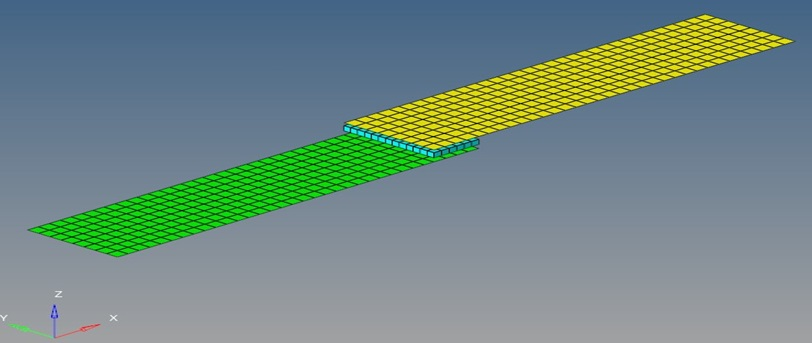
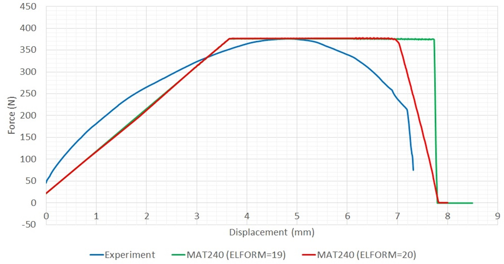
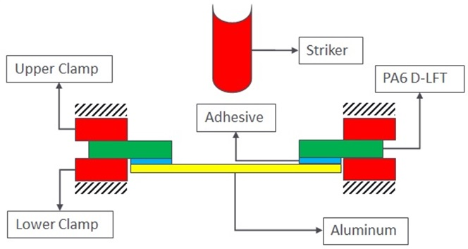
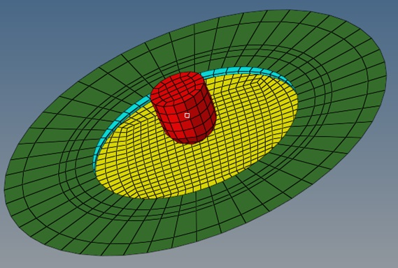
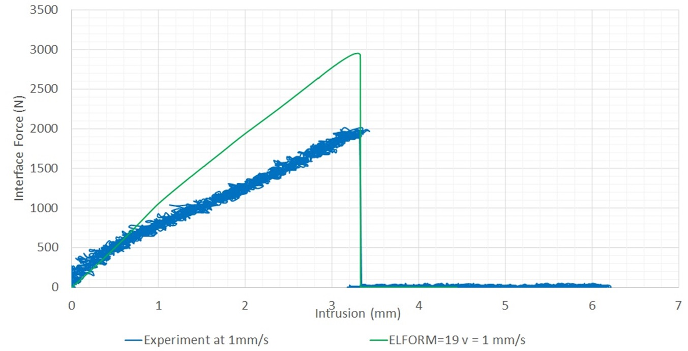
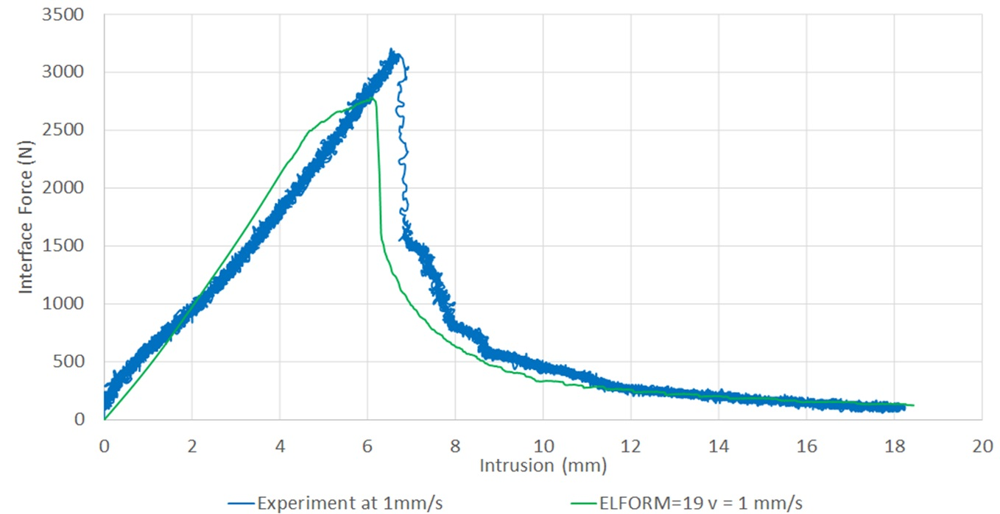

Master Thesis: FEM Simulation & material modelling
Kautex Textron GmbH, Bonn
Task
| Topic | Explicit Simulation for Material Modelling of an Adhesive and a Sealant in the Battery Housing of an Automotive |
| Aim | Propose a material model for the adhesive/sealant between Polyamide 6 (PA6), and aluminium protection covers of the battery housing system in an automotive |
| Approach | Single lap shear test is performed for an adhesive and a sealant and the F-S (Force-displacement) curves are utilized to model the material behaviour. The modelled material is validated with puncture impact tests and based on the findings, recommendations were made to the company regarding the most suitable material for their application. |
| Material models | MAT1, MAT24, MAT169 & MAT240 in LS-DYNA |
Single lap shear test setup
Simulation setup of single lap shear test in LS-DYNA
Modelled material with MAT240 for the adhesive

Modelled material with MAT240 for the sealant
Puncture impact test setup for validation
 Puncture impact test of the adhesive
Puncture impact test of the sealant
Tools
About the company
With more than 5,000 workers spread across 30 sites in 13 countries, Kautex Textron is one of the top automotive suppliers in the world. Kautex is a leader in the design and production of plastic fuel systems, including SCR systems, cam and crankshafts, traditional and unique hybrid fuel systems, and plastic industrial packaging solutions. The company is at the vanguard of the new mobility period, leading the transition from steel to plastic fuel systems and offering camera and sensor cleaning systems for (semi-)autonomous vehicles, as well as battery systems for hybrid and full-electric vehicles. Kautex is dedicated to satisfying consumer needs while influencing the direction of mobility in the future, with a particular emphasis on innovation, adaptability, and teamwork.
Company Link: Kautex Textron GmbH